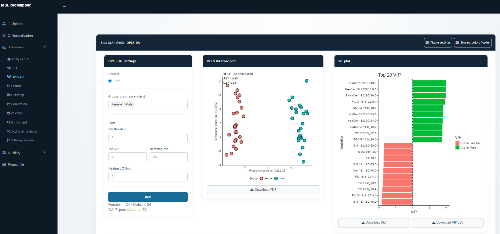
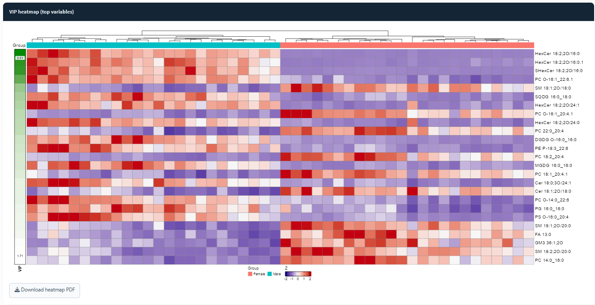

OPLS-DA
Compare sample groups and inspect VIP features with OPLS-DA.
OPLS-DA
Open 3. Analysis → OPLS-DA to model differences between the selected sample groups and inspect variable importance in projection (VIP).
Configure and run the model
- Select Lipid under Dataset.
- Under Groups to compare (class), select Female and Male for this example. These groups come from the primary grouping column chosen during metadata import.
- Set VIP threshold to
1, Top VIP to20, Heatmap top to25, and Heatmap Z-limit to2. - Check the sample counts below Run. This example has 24 Female and 24 Male samples, with seven-fold cross-validation and 50 permutations.
- Click Run to fit the model and generate the plots.


Read the score plot
Each point represents a sample, colored by group. The horizontal axis shows the predictive score and the vertical axis shows the orthogonal score. In the supplied example, the plot reports R2Y = 0.981 and Q2 = 0.961. R2Y summarizes model fit to the response, while Q2 summarizes cross-validated predictive performance. Interpret these values together with model validation and the experimental design.
Read the VIP plot
VIP values summarize feature importance in the model. The threshold filters features by VIP, and Top VIP controls how many are displayed. In this comparison, red bars extend left for features with higher mean abundance in Female samples, and green bars extend right for features with higher mean abundance in Male samples. Bar length represents VIP magnitude. Direction is assigned from group mean abundance.
The VIP plot displays lipid names from the feature annotations, allowing you to identify the features contributing to the model.
Export the results
Use Download PDF beneath the score and VIP plots to save the figures, and Download VIP CSV to export the VIP table. Adjust appearance with Figure settings and group colors with Shared: colors / order.
Inspect the VIP heatmap
Scroll down to VIP heatmap (top variables) to view the selected features across samples.
Rows show the selected lipid features and columns show samples. The top annotation identifies the Female and Male groups. The dendrogram above the columns summarizes sample clustering, and the green annotation on the left shows each feature's VIP magnitude.
Cell colors represent values standardized within each feature. Red indicates values above that feature's mean, purple indicates values below it, and white is near the mean. In this example, the Z-score color range is limited to −2 to 2.


Click Download heatmap PDF below the heatmap to save the figure.
See Figure settings for shared group colors and display order.